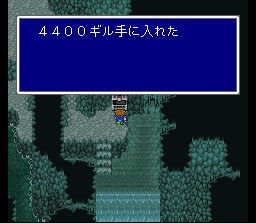
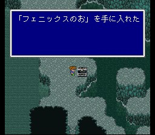

지하대하
동쪽 숲에 가면 모그리를 만납니다. 모그리는 일행을 보고 놀랐는지 구멍 안으로 떨어지고, 일행은 모그리를 구하기 위해 동굴 안에 들어갑니다.
지하 동굴 안에 나오는 놈들은 전부 불 아님 전기에 약하니까, 인술을 던져대면 속편합니다.
끝까지 오면 모그리가 티라노사우루스에게 위협받고 있습니다. 이 녀석은 언데드이며 불이 약점입니다. (대부분의 언데드 몬스터는 불을 약점으로 가지고 있습니다.) 그라비데도 먹히고.. 싸움을 오래 끌면 ????에 피해를 입으니 빨리 처리하시길.
물리치면 모그리가 자신의 마을을 가르쳐 주는데, 사막에 길따라 나있는 숲이 있습니다. 그 숲 위를 모그리가 가르쳐준 길대로 따라갑시다. 길을 벗어나면 샌드크로우라라는 놈이 출몰하는데 무지 셉니다. 그러니 얌전히 길을 따라가시는 편이.. 숲 가운데에 있는 모그리 마을에 도착합니다. (모그리의 안내를 주의깊게 보지 않으면 여기 찾는데도 고생합니다.)